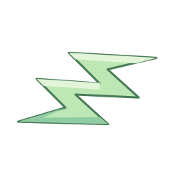
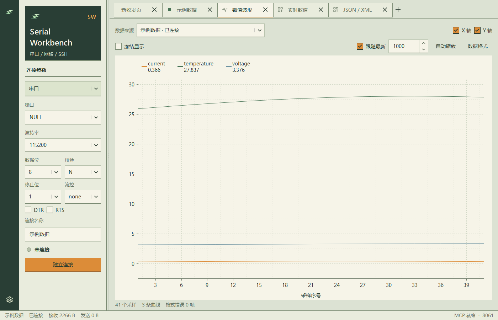

正在维护的项目
Serial Workbench 是我日常使用的调试工具，也在持续完善。

Serial Workbench
v0.15.38串口、网络和 SSH 调试工具。查看原始数据与波形，也可通过命令行和 MCP 在后台接入，和工作台共享同一会话。
下载 Windows 安装包
v0.15.32 实际界面 · 演示数据
为什么做它
调试时经常要在终端、波形和解析工具之间切换。我把它们放进同一个工作台，共用一条连接。
看看源码
项目使用 Qt / C++，采用 Apache-2.0 许可证。在 GitHub 查看源码